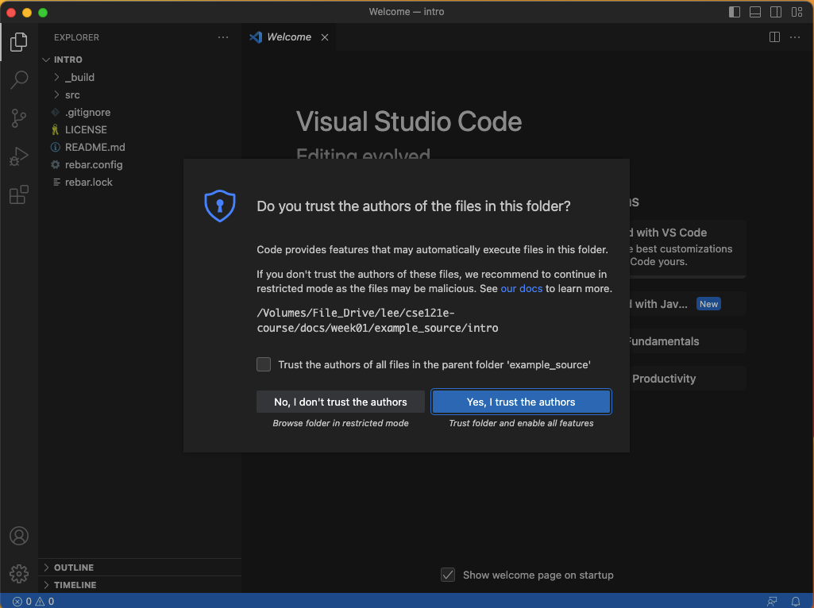
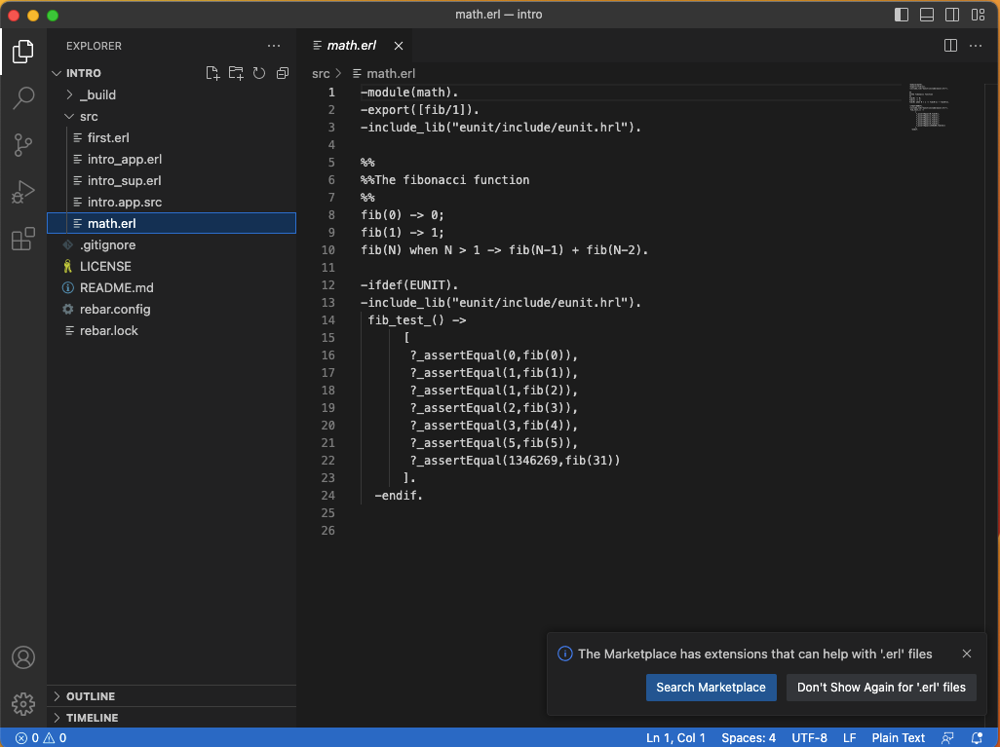
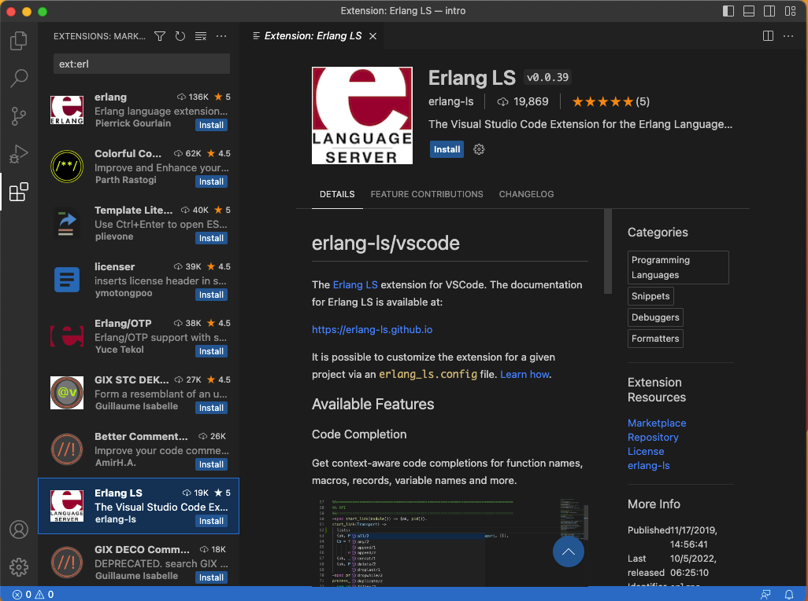
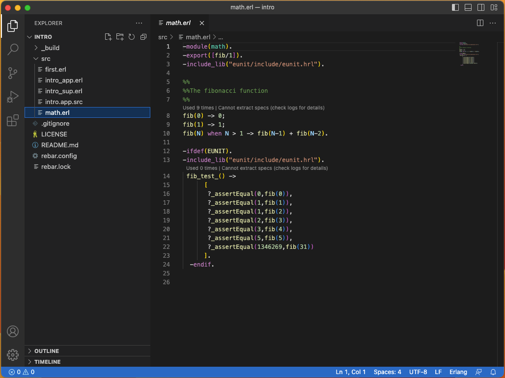
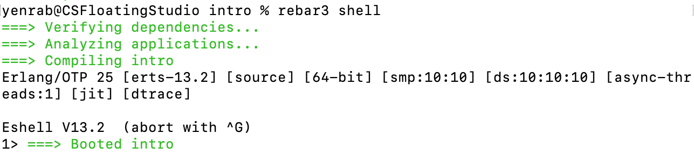
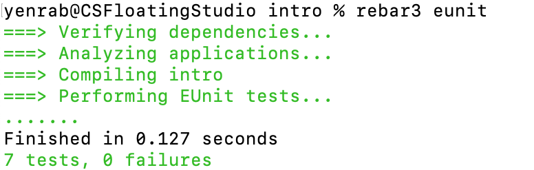
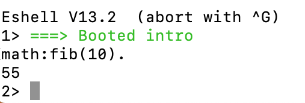

The Why of Erlang
Some Background
The Ericsson corporation in northern Europe had a need. Their old telephone control system was going to be replaced with new hardware. They had created the new hardware, but the design and development of the controlling software collapsed. They needed to replace that development with something else, or loose a lot of money. Thankfully they had been financing Joe Armstrong and others to explore "a better way of programming telephony applications" as part of Ericsson's research lab expenditures since the late 1980's.
In the lab, Armstrong and a few others had been creating and experimenting with a new language they called Erlang. Initially concieved as an internal Ericson language, those responsible, including Armstrong, found that the language worked very well for any system that needed massively concurrent, distributed applications with nearly 100% uptimes. In 1998, the Ericsson corporation open sourced Erlang. Since then, many companies including Google, Amazon, WhatsApp, Digital Ocean, MasterCard, Nintendo, and many others have adopted Erlang as a major part of their design and development core set of tools.
If you want more information on the history of Erlang, Joe Armstrong wrote an article for the ACM outlining how and why Erlang became what it is.
Python and Erlang are Cousins
Take a look at Figure 1. It shows the ancestery of both Erlang and Python. Since Modula is an ancestor of both languages you can expect to see some things in Erlang that remind you of what you learned about coding when you studied Python. An example of this is the concept of a module.
Installations
Windows Users
It is possible to do Erlang development directly on Windows. However, to make your life easier, install Windows Subsystem for Linux. Then follow the linux instructions.
MacOS Users
There are many ways to install an Erlang development environment on your device. The easiest way is to use homebrew. If you don't have homebrew installed, do it now.
After completing the installation of homebrew, enter brew install rebar3 in the terminal.
Linux Users
Open a terminal. Type sudo apt update. After this command completes, type sudo apt install rebar3.
Everybody
Your project creation and code compiler tools are now all set up and ready to go.
The Editor
The editor selected for this course is Visual Studio Code, but if you have a favorite text editor, not Word or Pages, feel free to use it.
WSL and Linux Users
Follow the Ubuntuinstallation and startup instructions. You can ignore the rest.
MacOS Users
Go to the site for Visual Studio Code download the installer.Everybody
Since you will be writting in Erlang, add this plugin to VSCode.
Please realize that it's OK if you don't understand everything about VSCode and this plugin right off the bat. You'll gradually learn as you run into a need. The reason for adding the Erlang plugin is that it enables color coding for Erlang in VSCode and the showing of help docs for built-in Erlang functions (BIFs) when you move your mouse over a function and type Command (MacOS) or control (Windows).
Test Your Tools
Download and unzip this directory that contains a project you can use to test your rebar3 and Erlang installation, VSCode, and the plugin you installed in VSCode. After going to where you downloaded the file, select it and unzip it.
How to Unzip
Testing VSCode
After the folder is unzipped, run VSCode and select File->Open Folder from the pulldown menu at the top of your screen. Go to the folder you unzipped, not the zipped file, highlight it, and then click Open. You should now see this.
Select "Yes, I trust the authors." On the left of the window under intro, select src and then math.erl. You will then see a new message pop up at the bottom of the screen. It looks like this.  Select "Search Marketplace."
A new list appears in the left-hand view. It is a list of possible Erlang plugins for VSCode. Select the one named "Erlang LS." You will then see this.
Select install near the top-center of the right-hand view in the IDE. There will be a short delay, depending on your internet speeds, and then you will see an option to uninstall. Do NOT select this option. Instead, select the Explorer icon in the upper-left of the window. You will be shown a list of what is in the project. Select math.erl from this list.
You will now see the source code in the math.erl file. The code is colored to make it easier to read. You will also see two messages in the lower right courner of the screen. Both of these can be safely closed and ignored. VSCode now looks like this.
While this is a complicated VSCode installation process, you only have to do it once to get what you need for this course.
Your editor is now all set up. Now lets see how to use the rebar3 and Erlang tools to compile and execute code in the project. In this class, we will run all code in a REPL. To do so, use the terminal and cd, change directory, into the intro directory. Then type rebar3 shell. If you have everything set up correctly, you should see this.
If you don't, contact your instructor for help. If you do, enter q(). to exit the REPL.
The course heavily uses Unit Tests and Test Driven Development (TDD). Your weekly tasks will be to write code that passes a set of prewritten Unit Tests for that week. Let's make sure the unit testing portion of rebar3,EUnit, is set up correctly. To do this, stay in the intro directory in your terminal. Enter rebar3 eunit. You should see this.
If you don't see this message, contact your instructor for help.
If you want to, you can also run code directly from the REPL. Here is an example. Type rebar3 shell again. Once it has started and you see evidence of a successful setup, enter math:fib(10). Make sure you include the period at the end. When you do this, the 10th Fibonacci number is calculated amd you should see this.
If you don't, contact your instructor for help.
Now for the final test. Enter "first:printout().", including the period, in the REPL. It should print out "It worked!!" in the REPL with "ok" on the line after.
If you don't see this, contact your instructor for help.
Workflow
The work you do using these two tools will flow like this. Each time you are asked to do an assignment, you will download a zip file containing an Erlang project. You will unzip it and then use your text editor, VSCode or some other of your choice, to open the project and write code. You will write the code is such a way that a set of Unit Tests passes. After you learn how to write functions, you will write functions as part of your task from scratch. Prior to learning to write functions, you will be given a stubbed-out fuctions and all you will need to do is fill in the needed code.
Write the code to pass one test at a time! Do NOT try to write code that passes all of the tests at once. That will take you longer.
If you follow this pattern for each assignment, you will reduce your workload and increase your learning.